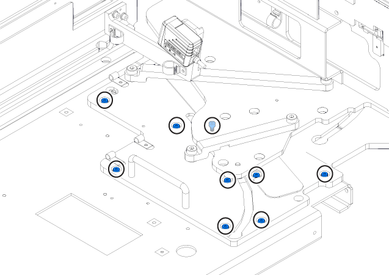

This topic includes information about how to replace the sample presentation unit (SPU) subsystem.
Safety Reminder
Servicing the DxI 9000 instrument involves potential risks for pinch and puncture, electrical shock, and exposure to hazardous materials. You must mitigate these risks by taking appropriate countermeasures. See
Safety for more information.
Open the SPU subsystem by grasping the locking lever and pulling away from the instrument.
Note: Lift the swing-out table a few inches to allow the SPU to swing out as illustrated below. (The swing-out table is not available in later models of the DxI 9000. For analyzers without a swing-out table, proceed to the next step.)
1
Sampler Handler pin
2
Swing out table
Disconnect the cables (3) for the SPU subsystem near the presentation tray and remove from J-clips as needed for SPU assembly to be entirely removed:
Network cable from SPU camera (cable must be removed from J-clips on SPU baseplate - removing connector at camera may not be needed)
Serial cable
Main SPU cable connector
Close and latch the SPU assembly.
Raise the swing-out table a few inches and firmly swing the SPU back into place and latch it. See illustration below for the most efficient hand placement:
Note: The swing-out table is not available in later models of the DxI 9000.
Open the main instrument cover.
Remove the nine screws (4mm driver) securing the SPU baseplate to the instrument chassis.
Note: All screws can be accessed when SPU is closed.
Figure 394: Sample Presentation Unit (SPU) Baseplate and Screws

Hold the SPU firmly, and pull the latch release to release the presentation unit, but don't pull it out.
Lift the entire SPU subsystem up and out of the instrument, note the locating pins and metal lip which hold the baseplate onto the instrument chassis when the screws are removed.
Warning: The SPU is heavy. Use caution when lifting it.
Caution: When resting the subsystem somewhere after removal, ensure that nothing is binding or pinched which may cause damage.
Installing the Subsystem
Follow these steps to install the SPU onload/offload subsystem.
Lift the entire SPU subsystem and place into the instrument, ensuring the baseplate rests on top of the locating pins and beneath the metal retaining lip.
Caution: Be careful not to stretch or pinch any wires or cables during installation.
Latch the right side so the SPU is in a closed and latched position.
Secure the baseplate to the instrument chassis with the nine screws previously removed (4mm driver).
Note: All screws can be accessed when SPU is closed.
Figure 395: Sample Presentation Unit (SPU) Baseplate and Screws
Connect the cables near the presentation tray:
Network cable from SPU camera (cable must be routed through J-clips on SPU baseplate)
Load several empty racks and confirm that they proceed to the off-load area without any issue to verify that the SPU and presentation tray are functioning properly together.